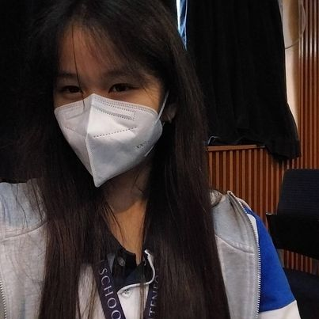

PROBLEM: Over the course of the years when COVID was around and active, people have turned to having a green thumb as often seen in the more evident plants and use for the right compost to feed the plants. Aside from bacteria, fungi, insects and worms and more having a positive effect for healthy plant growth, using the right compost is what is also needed. If that is so, how will horse manure or vegetable peelings affect the carrot’s growth as a compost?
HYPOTHESIS: If horse manure or vegetable peelings can affect the carrot’s growth as compost, then the carrot is sure to grow healthy and with lesser bacteria.
VARIABLES: Presence of the compost (horse manure) The main factors controlling composting are: operating parameters (moisture content and aeration), pH, and temperature are not industrially altered, and nature of substrate (C/N ratio and particle size).that will help them in getting the money needed.
What exactly do these carrots contain? What made its color? Why is it healthy?
ALPHA AND BETA CAROTENE α-Carotene and β-carotene are provitamin A carotenoids, meaning they can be converted in the body to vitamin A. The vitamin A activity of β-carotene in food is 1⁄12 that of retinol (preformed vitamin A). Thus, it would take 12 µg of β-carotene from food to provide the equivalent of 1 µg (0.001 mg) of retinol. The vitamin A activity of α-carotene from foods is 1⁄24 that of retinol, so it would take 24 µg of α-carotene from food to provide the equivalent of 1 µg of retinol. Orange and yellow vegetables like carrots and winter squash are rich sources of α- and β-carotene. They are the molecules that support the color of th carrot , responsible for it’s orange color.
ANTHOCYANIN
Anthocyanins are a class of flavonoid antioxidants, and they represent some of the most vivid colors in nature, varying amongst shades of red, purple and blue, and they are produced in various plant tissues, including the leaves, roots, flowers and fruits. However, these natural pigments are generally unstable, and are susceptible to degradation driven by temperature, acidity and light exposure. In the past, this has limited their broad use as natural colorants. Recent advances in food technology and the identification of new sources of anthocyanins have contributed to a significant expansion of their use, especially in beverages. Anthocyanin’s share of the industry revenue has grown significantly over the last five-year period, reaching an estimated 9.5% sharePurple carrots contain anthocyanins in addition to the provitamin A carotenoids in typical orange carrots. Simultaneous consumption of these phytochemicals in carrots may affect the bioavailability of carotenoids. The bioavailability of β-carotene in humans was assessed from an acute feeding of orange (OC) and purple (PC) carrots with white (WC) as a control. Carrot smoothies were served to female subjects (n = 5, aged 21−26 years) for breakfast after 1 week on a low carotenoid diet and overnight fast. OC and PC smoothies were equalized to 10.3 mg of all-trans β-carotene. Plasma β-carotene was measured for 144 h following treatments. Peak plasma concentrations of OC and PC treatments did not differ. The PC treatment 0−144 h area-under-the-curve for β-carotene was 76% of the OC treatment (P < 0.05). However, when the first 24 h were compared, OC and PC treatments did not differ, suggesting that anthocyanins in purple carrots do not affect the absorption of β-carotene postprandially.
Purple carrots contain anthocyanins in addition to the provitamin A carotenoids in typical orange carrots. Simultaneous consumption of these phytochemicals in carrots may affect the bioavailability of carotenoids. The bioavailability of β-carotene in humans was assessed from an acute feeding of orange (OC) and purple (PC) carrots with white (WC) as a control. Carrot smoothies were served to female subjects (n = 5, aged 21−26 years) for breakfast after 1 week on a low carotenoid diet and overnight fast. OC and PC smoothies were equalized to 10.3 mg of all-trans β-carotene. Plasma β-carotene was measured for 144 h following treatments. Peak plasma concentrations of OC and PC treatments did not differ. The PC treatment 0−144 h area-under-the-curve for β-carotene was 76% of the OC treatment (P < 0.05). However, when the first 24 h were compared, OC and PC treatments did not differ, suggesting that anthocyanins in purple carrots do not affect the absorption of β-carotene postprandially.
VITAMIN E
Vitamin E is the collective name for lipophilic, naturally occurring compounds whose molecular structure is comprised of a chromanol ring with a side chain located at the C2 position and includes four tocopherols and four tocotrienols. Vitamin E, discovered as a dietary factor essential for normal reproduction, is now accepted as a major free radical scavenging antioxidant in humans and protects biological molecules from detrimental oxidative modifications. The structures and properties of vitamin E
The structures and properties of vitamin E homologues and their sources, functions, and applications are summarized.
NITROGEN
Nitrogen is an essential macronutrient for plant function and is a key component of amino acids, which form the building blocks of plant proteins and enzymes. Proteins make up the structural materials of all living matters and enzymes facilitate the vast array of biochemical reactions within a plant. Nitrogen is also a component of the chlorophyll molecule, which enables the plant to capture sunlight energy by photosynthesis, driving plant growth and grain yield. Nitrogen plays a critical role within the plant to ensure energy is available when and where the plant needs it to optimize yield. This crucial nutrient is even present in the roots as proteins and enzymes help regulate water and nutrient uptake.
 Mahairia musa S. is one of the five members of group 4A of 9 borgia, she is a new student at Ateneo de Davao junior high school. She was born on November 8, 2006 which means she is 16 years old this date, she is quite shy and as part of the Rizal Book club she is clean and is collective. As part of the Rizal Book club she is clean and is collective which means she tries to answer her problems in the correct way. As a new member of Ateneo de Davao Junior high school just joining this school year she is still very inexperience about this school but still tries her best. Even with her inexperience with coding she will try to finish it and complete the tasks given to her.
"Shiloh Maria D. Dalisay is one of the fabulous members of Group 4A of the optimistic section, 9-Borgia of the Ateneo de Davao University. Born in 2008 of March 3rd, she is a rather shy yet sentimental person who tends to share many wise things one moment at a time and excels in drawing. Shiloh is a sketch artist and a storywriter, being part of of the Ateneo Anime and Comics Club as one of the club's storywriters. Outside her school life, she plays gacha games like Genshin Impact rhytm games like Project Sekai, reads books and writes stories time to time and also helps out her friends when they need her help in rather deep topics and discussions. Being one of the team's members, she makes sure that the output turns out exactly the way it is, yet keeps some of herself on the coding like adding a touch to a story."